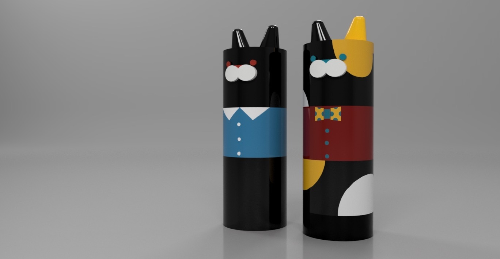
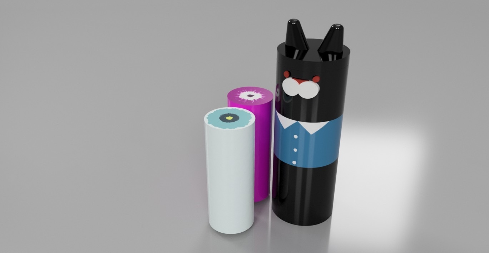
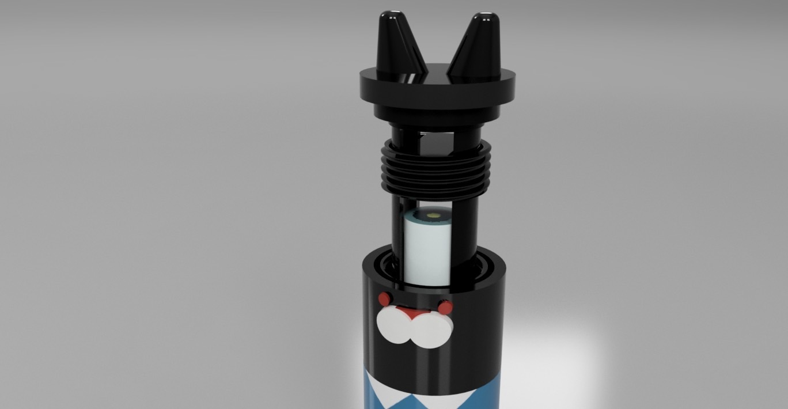

名渕 浩史Nabuchi Hiroshi
経営学部 准教授
#デジタルマーケティング
#eコマース
#観光
#リユース
大阪市立大学大学院（現 大阪公立大学大学院）創造都市研究科 修士課程終了。民間企業にてマーケティングおよびデジタルマーケティングに関するコンサルティング業務に従事。2017年 近畿大学 経営学部 講師、2020年より現職。
デザイン思考を活用した、創造性能力
「マーケティング×デジタル」の立場から、eコマース・観光・ブランド・リユース・プロモーション技法などについて考えています。企業様とのプロジェクトとしては、学生が中心となって、商品コンセプト、プロモーションについて提案を行っています。
主な書著（共著・分担執筆）として『デジタル社会のマーケティング』(中央経済社 2019)、『経営戦略論を学ぶ』(創成社 2019)、『地域ブランド論』(同文舘出版 2012)などがあります。
主な作品
着せ替えハンドクリーム



その他の作品